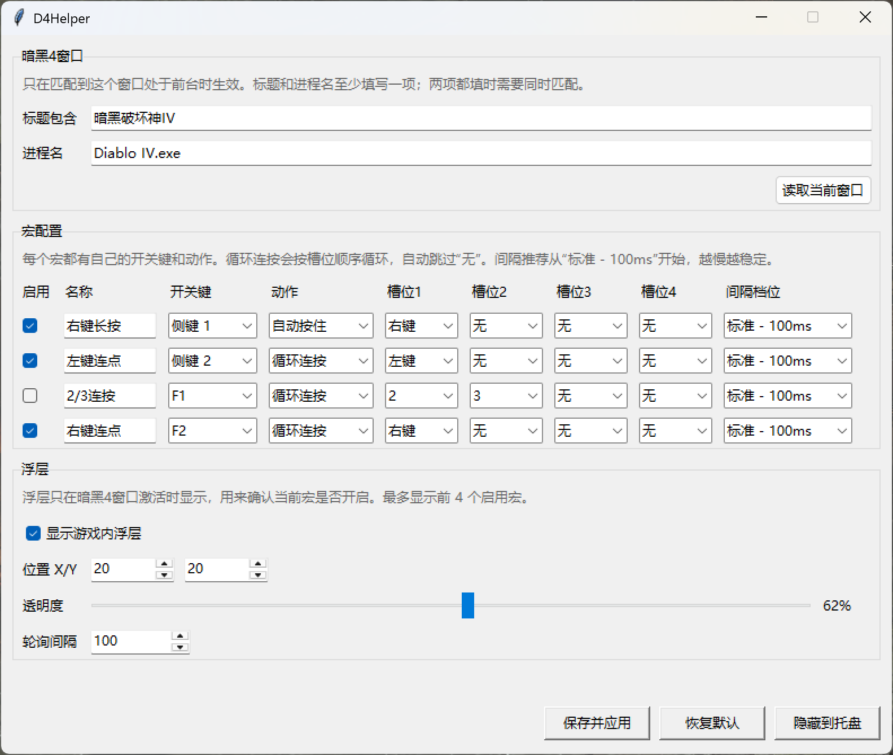
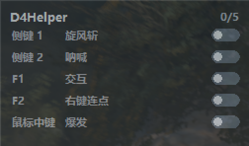

自定义开关键
开关键以录制为主，点“录”后按一次目标键即可绑定。常用键也可以点“选”快速设置，界面更清爽。
Windows · Diablo IV · Lightweight Helper
D4Helper 专注减少长按鼠标和重复按键带来的疲劳。它只在配置的暗黑 4 窗口处于前台时生效，失焦后自动释放长按并停止循环。
Features
D4Helper 不是复杂的通用宏编辑器，而是围绕暗黑 4 默认按键习惯设计的小工具。
开关键以录制为主，点“录”后按一次目标键即可绑定。常用键也可以点“选”快速设置，界面更清爽。
用一行配置选择快捷键和要控制的宏。每个一键启动都可以单独启用或关闭，按一次打开一组宏，再按一次关闭。
最多配置 4 个槽位，支持数字、字母、F 键、空格、鼠标左键、右键和中键。程序按顺序循环触发，并自动跳过空槽位。
按一次开关键后自动按住左键、右键、中键或键盘按键，再按一次释放。适合右键长按、持续移动或持续施放类场景。
只在匹配到暗黑 4 前台窗口时生效。切出游戏后会自动释放长按、停止循环并清理状态，避免误触桌面或其他软件。
浮层显示开关键、宏名称和图形开关状态。鼠标移动到浮层区域时会临时避让，减少遮挡操作的问题。
配置完成后可以隐藏到系统托盘，保持后台运行。退出时会释放已按住的鼠标和键盘按键。
配置界面可以手动检查 GitHub Release 是否有新版本。程序不会自动下载或替换文件，更新由用户自己决定。
Screenshots
主界面保留宏配置和一键启动，高级选项收进菜单，浮层只显示游戏中真正需要确认的信息。


Usage
进入游戏窗口，让 D4Helper 能读取窗口标题和进程名。
打开配置页面，点击“读取当前窗口”，自动填入暗黑 4 的匹配条件。
选择开关键、动作、目标按键和连按间隔；需要组合开关时，在“一键启动”里勾选要控制的宏。
点击“保存并应用”，回到暗黑 4 后用侧键或 F 键开启、关闭对应宏或一键启动组合。
Download
推荐使用国内加速下载。加速链接由第三方 GitHub 代理提供，如果不可用，请使用 GitHub Release。发布包包含 `D4Helper.exe`、`config.json` 和 `VERSION`。
Support
D4Helper 是个人维护的开源小工具。如果它确实帮你减少了重复操作，可以扫码打赏支持。遇到问题、想反馈建议，或想交流配置方案，欢迎加入 QQ 交流群：958154728。